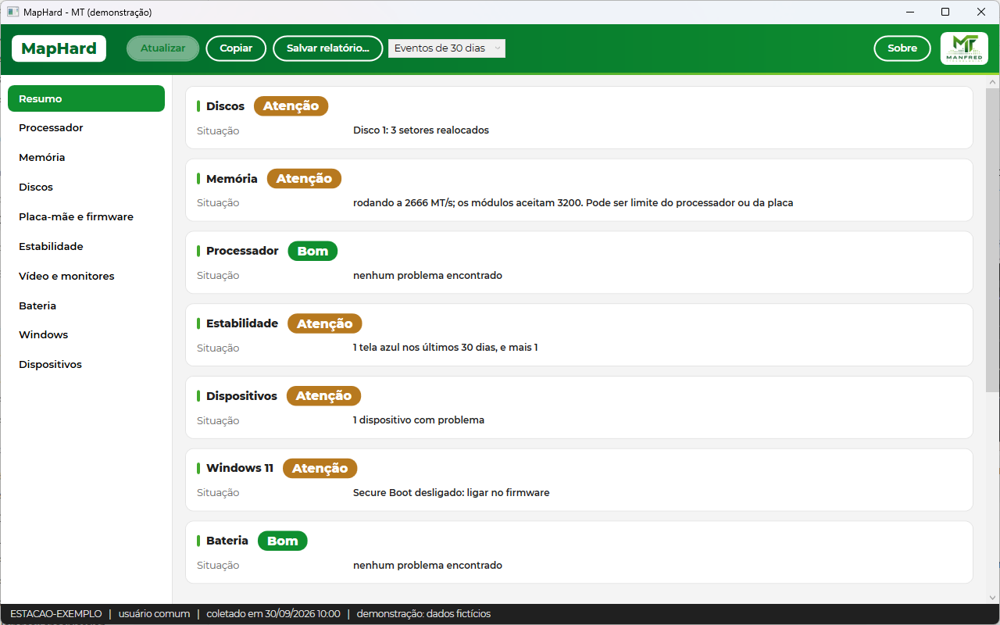
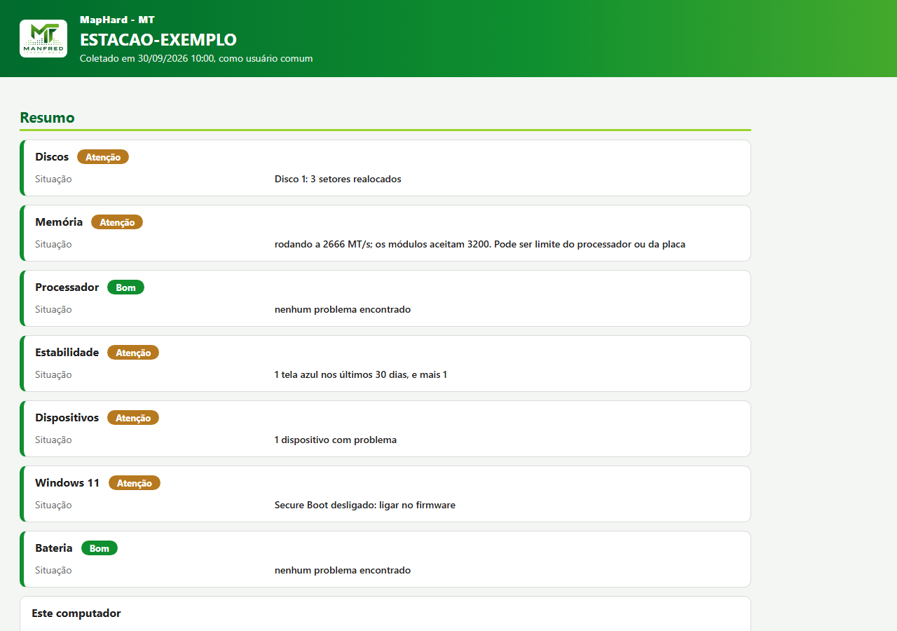

MapHard - MT
Mostra o hardware do computador e aponta, logo na primeira tela, o que pede atenção: disco com problema, memória abaixo da velocidade, desligamentos inesperados, dispositivo sem driver e se a máquina aceita o Windows 11.

Windows 10 e 11, 64 bits. Arquivo único, sem instalar e sem precisar de administrador para abrir. Tela com dados de exemplo: clique para ampliar.
O arquivo vem do GitHub, onde ficam o código e todas as versões, com o SHA-256 para conferir o download.
Use só em computadores que você tem autorização para administrar ou para atender. Veja o uso autorizado.
Por que ele existe
No atendimento, a primeira pergunta sobre uma máquina é quase sempre a mesma: o que tem nela, e o que está dando problema? Responder pede vários programas abertos ao mesmo tempo, um para o processador, outro para a saúde dos discos, o Visualizador de Eventos, o Gerenciador de Dispositivos.
O MapHard junta tudo numa janela só e começa pelo que importa. A primeira tela tem um cartão por área, com Bom, Atenção, Ruim ou Desconhecido e o motivo numa frase. O clique no cartão abre o detalhe.
Desde o fim do suporte ao Windows 10, ele também responde a pergunta que o cliente mais faz: esta máquina aceita o Windows 11, ou é hora de trocar?
O que ele mostra
Processador
Nome, codinome, núcleos e threads, clocks, caches, instruções e virtualização.
Memória
Um cartão por slot, inclusive os vazios, e o aviso quando roda abaixo da velocidade ou em canal único.
Discos
Saúde pelo SMART, com o motivo escrito, temperatura, horas ligado e dados gravados.
Estabilidade
Telas azuis, desligamentos inesperados e erros de hardware dos últimos 30 ou 90 dias.
Dispositivos
Os que estão com problema no Gerenciador de Dispositivos, com o que o código quer dizer.
Windows 11
Item por item: processador, TPM, UEFI, Secure Boot, memória e disco.
Vídeo, bateria e rede
Placas de vídeo, monitores, desgaste da bateria e placas de rede.
Relatórios
HTML para o cliente, que vira PDF pelo navegador, JSON com tudo e CSV para planilha.

Como usar
- Baixe o maphard.exe e copie para qualquer pasta, ou para um pendrive.
- Dê um duplo clique nele. A leitura começa sozinha e a primeira tela mostra o que pede atenção.
- O SMART dos discos SATA e o BitLocker pedem administrador: use o botão Ler como administrador. Para guardar o resultado, use Salvar relatório, e para colar num chamado, Copiar.
Na primeira vez, o Windows pode exibir "O Windows protegeu o seu computador". O motivo é a falta de assinatura digital, que é um certificado pago. Clique em Mais informações e depois em Executar assim mesmo.
Pela linha de comando, que também só lê:
maphard coletar --html estacao.html maphard coletar --pasta \\servidor\inventario
Com --pasta, cada computador grava o JSON e o CSV com o próprio nome e a data, e vários podem gravar na mesma pasta de rede, por um roteiro de logon. O manual completo está no README do projeto.
Uso autorizado
O MapHard - MT lê o hardware e os registros do Windows do computador em que roda e não altera nada nele. Use o programa só em computadores que você tem autorização para administrar ou para atender. Os relatórios trazem o nome do computador e números de série, que podem identificar quem usa a máquina: guarde onde só quem precisa tem acesso e apague quando não precisar mais. O programa não envia nenhuma informação para fora do computador.
- O que ele faz: só lê. Os únicos arquivos que grava são os relatórios que você pede, na pasta que você escolher.
- O que ele não faz: não instala nada, não envia nada pela internet e não lê nem mostra a chave de produto. Campo que não pôde ser lido aparece com o motivo, nunca como zero.
- Até onde vai: a saúde dos discos vem do que o próprio disco informa no SMART e não é previsão de falha. A verificação do Windows 11 segue a lista de processadores publicada pela Microsoft para o Windows 11 25H2; a ferramenta oficial da Microsoft para essa conferência é o PC Integridade do Computador.
Código aberto
O MapHard - MT é software livre, sob licença GPL-3.0. Qualquer pessoa pode usar, estudar e adaptar o programa. Quem distribuir uma versão modificada precisa abrir o código dela também.
Licença e garantias. O MapHard - MT é distribuído gratuitamente sob a GPL-3.0. O que ele mostra depende do que o hardware, o firmware e o Windows informam, e alguns dados só aparecem com administrador. A saúde dos discos vem do que o próprio disco informa no SMART e não é previsão de falha. A verificação do Windows 11 segue a lista de processadores publicada pela Microsoft, e a ferramenta oficial da Microsoft para essa conferência é o PC Integridade do Computador. A licença não inclui promessa de funcionamento em todo computador nem serviço de suporte técnico. As disposições da GPL-3.0 sobre garantias e responsabilidade aplicam-se nos limites permitidos pela legislação brasileira e não restringem direitos assegurados ao consumidor por lei.
Se alguma coisa atrapalhou no seu atendimento ou você tem uma sugestão, escreva nas Issues.